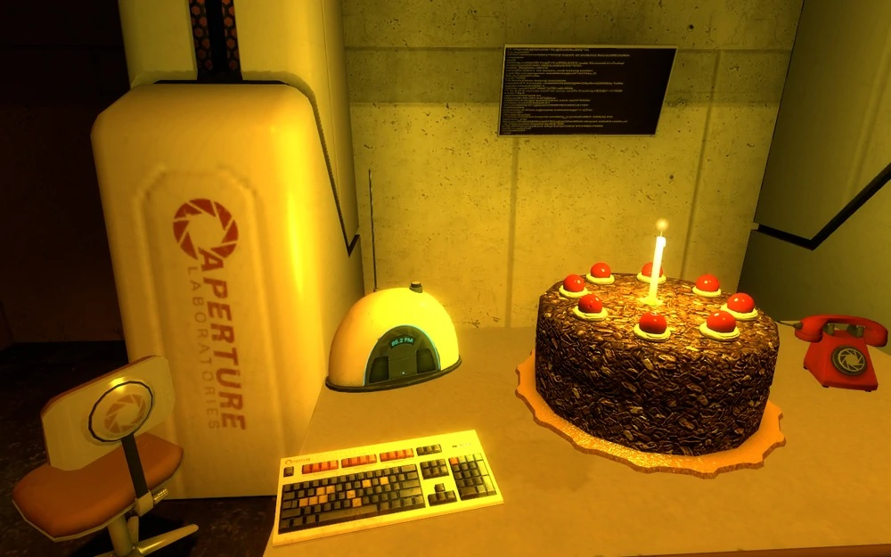

Cake

Description
The famous portal cake
Ingredients
- 1 (18.25-ounce) package chocolate cake mix
- 1 can prepared coconut–pecan frosting
- 3/4 cup vegetable oil
- 4 large eggs
- 1 cup semi-sweet chocolate chips
- 3/4 cup butter or margarine
- 1 2/3 cup granulated sugar
- 2 cups all-purpose flour
- 1 tsp. vanilla extract
- 2/3 cup cocoa powder
- 1 1/4 tsp. baking soda
- 1 tsp. salt
- 1/4 tsp. baking powder
- 1 to 2 (16 ounces each) cans vanilla frosting
- A 20-foot thick impermeable clay layer
Steps
- i dont really know lol
- the same way you make a normal cake i guess ?
Back to Homepage